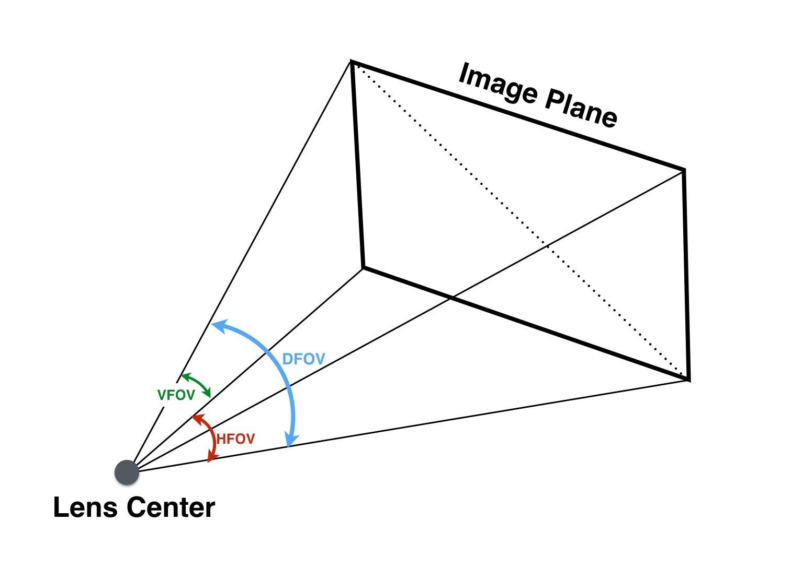
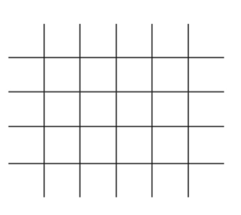
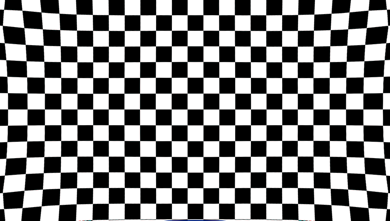
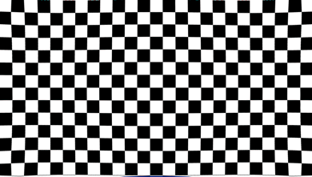
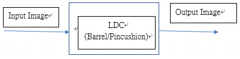

3. LDC调试指南¶
3.1. 基本概念¶
3.1.1. 视场角¶
{kind=link}

图 3.1 水平视场角 (horizontal field of view)、垂直视场角 (vertical field of view)、对角线视场角(diagonal field of view)¶
3.2. 各应用场景参数调试说明¶
3.2.1. LDC¶
配置参数 |
配置范围 |
参数意义 |
|---|---|---|
CenterXOffset |
-511~+511 |
图像中心点相对于物理中心点的水平偏移 |
CenterYOffset |
-511~+511 |
图像中心点相对于物理中心点的垂直偏移 |
DistortionRatio |
[-300,500] |
矫正强度，负数为枕型，正数为桶型 |
bAspect |
bool |
视野调整过程中是否保持幅型比 |
XYRatio |
0~100 |
视野大小参数，bAspect=1时有效 |
XRatio |
0~100 |
X方向视野大小参数，bAspect=0时有效 |
YRatio |
0~100 |
Y方向视野大小参数，bAspect=0时有效 |
stGridInfoAttr |
/ |
gridinfo参数 |
配置参数 |
配置范围 |
参数意义 |
|---|---|---|
bEnable |
bool |
是否开启gridinfo |
gridFileName |
/ |
gridinfo文件名称 |
gridBindName |
/ |
gridinfo绑定名称 |
isBlending |
bool |
暂未使用 |
bEISEnable |
bool |
暂未使用 |
homoRgnNum |
/ |
暂未使用 |
3.2.2. LDC矫正模型¶
LDC支持桶型畸变和枕型畸变两种校正模式，如 图 3.2 及 图 3.4 所示。

图 3.2 桶型畸变¶
{kind=link}

图 3.3 无畸变¶

图 3.4 枕型畸变¶
3.2.2.1. 桶形矫正举例¶
参数说明 |
参数设置 |
图片演示 |
|---|---|---|
畸变中心与图像中心重迭保持幅型比保持最大场视角 |
Width=1920 Height=1080 OutWidth=1920 OutHeight=1080 CenterXOffset/CenterYOffset=0 DistortionRatio=-165 bAspect=1 XYRatio=100 XRatio=100 YRatio=100 |
矫正前 
矫正后 
|
Ratio: 矫正强度值越大，表示矫正强度越小 |
DistortionRatio=-205 |
 |
bAspect: 是否保持幅型比 1:保持幅型比 0:不保持幅型比，保留最大视角 |
bAspect=0 DistortionRatio=-165 |
 |
bAspect=0, XRatio, YRatio XRatio: 水平视场角保留幅度 YRatio: 垂直视场角保留幅度 bAspect=1, XYRatio 使能 XYRatio: 保持幅型比的场景下，视场角保留的幅度 注：100为保留最大视场角，0为保留最大视场角的2/3 |
bAspect=0，XRatio=20 bAspect=1，XRatio=20 |


|
{kind=link}
{kind=link}
3.2.2.2. 枕形矫正举例¶
参数说明 |
参数设置 |
图片演示 |
|---|---|---|
典型配置 畸变中心与图像中心重迭 保持幅型比 保持最大场视角 |
Width=1920 Height=1080 OutWidth=1920 OutHeight=1080 CenterXOffset/CenterYOffset=0 DistortionRatio=500 bAspect=1 XYRatio=100 XRatio=100 YRatio=100 |
矫正前 
矫正后 
|
3.2.3. 数据流程图¶

图 3.5 LDC (Lens Distortion Correction flowchart)¶